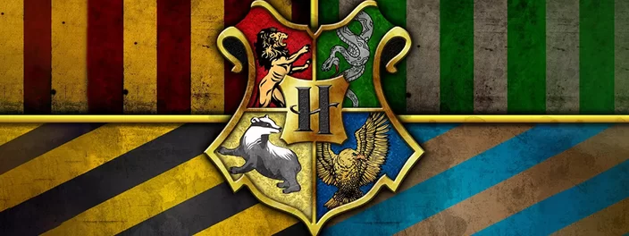
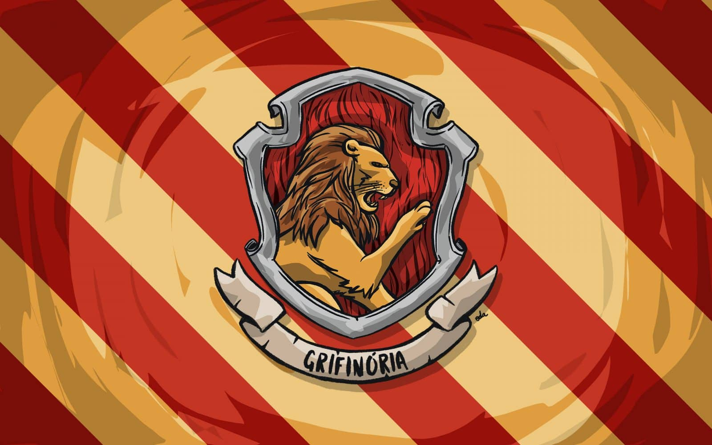
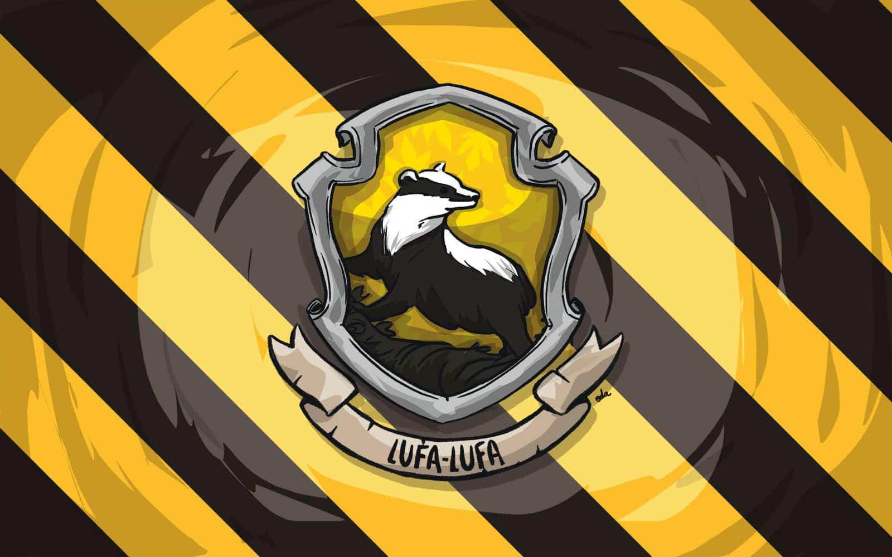
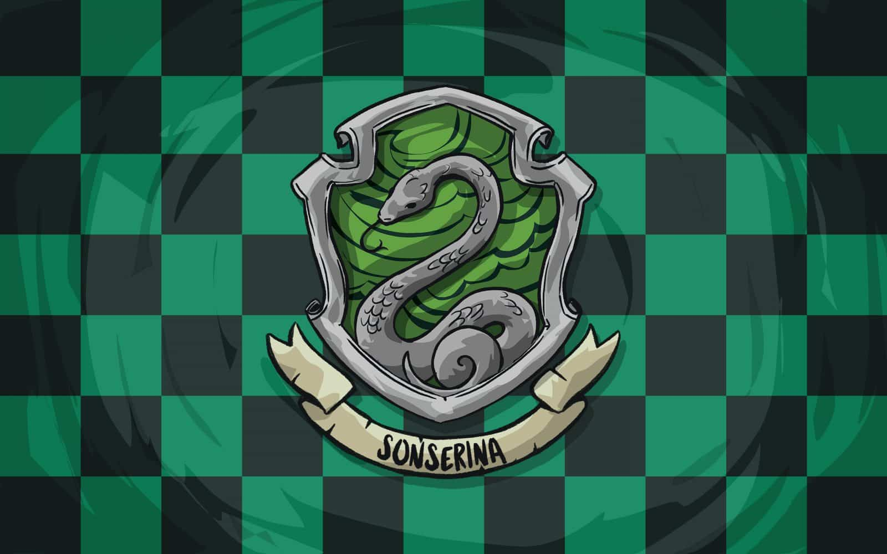

As Quatro Casas de Hogwarts

Localizada em um majestoso castelo na Escócia, a Escola de Magia e Bruxaria de Hogwarts é um dos mais renomados institutos de ensino do mundo mágico. Fundada no século X por quatro bruxos lendários - Godrico Gryffindor, Helga Hufflepuff, Rowena Ravenclaw e Salazar Slytherin - Hogwarts é o lar de uma rica história e tradição.
Os estudantes de Hogwarts são divididos em quatro casas - Grifinória, Lufa-Lufa, Corvinal e Sonserina - cada uma representando diferentes valores e qualidades. A atribuição das casas é feita pelo Chapéu Seletor, um artefato mágico que analisa a personalidade e ambições dos alunos para determinar sua casa ideal.
Grifinória - (Gryffindor)

Lar dos bravos e cavalheiros, o símbolo da Grifinória apresenta em seu estandarte um orgulhoso leão, acompanhado das cores vermelha e amarelo-dourada. A Casa valoriza feitos de coragem e superação pessoal que costumam ser realizados por altruísmo. Seus estudantes tendem a ser bastante aventureiros, mas se destacam, sobretudo, pela lealdade.
Lufa Lufa - (Hufflepuff)

Os estudantes da Lufa-Lufa são dedicados, pacientes e honestos. Suas admiráveis características os tornam trabalhadores árduos e modestos, sendo receptivos a todos os demais tipos de bruxos.
Corvinal - (Ravenclaw)

Os bruxos pertencentes à Corvinal se destacam por sua exímia inteligência. Nesse contexto, suas principais características são relacionadas a sabedoria, criatividade e personalidade única, o que garante a eles certa excentricidade. Contudo, a valorização exacerbada do academicismo pode torná-los perfeccionistas, frios, insensíveis e demasiadamente críticos em relação às outras Casas.
Sonserina - (Slytherin)

Os membros da Sonserina têm como características, sobretudo, a ambição e a busca pela grandeza. Por isso estão sempre se dedicando a alcançar e expandir metas e se empenhando com inteligência em diversas áreas da magia. Por outro lado, essas qualidades podem promover um senso de competição muito aflorado, o que os torna presunçosos e egoístas.